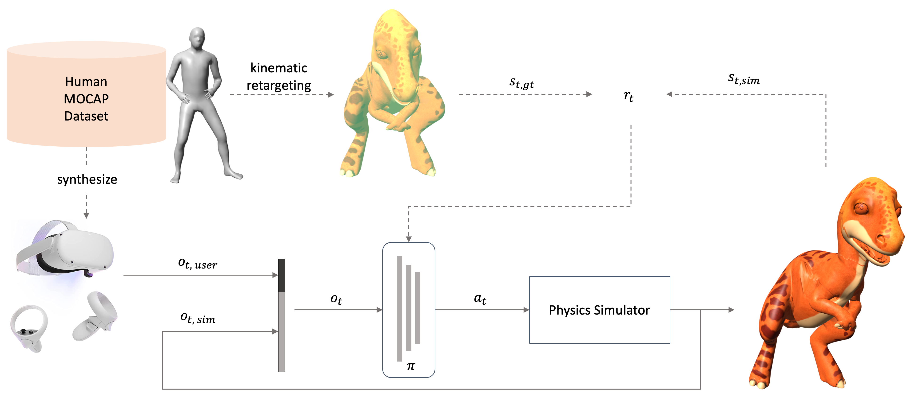

Physics-based Motion Retargeting from Sparse Inputs
DANIELE REDA, University of British Columbia, Canada JUNGDAM WON, Meta AI Research, Pittsburgh, United States YUTING YE, Reality Labs Research, Meta, United States MICHIEL VAN DE PANNE, University of British Columbia, Canada ALEXANDER WINKLER, Reality Labs Research, Meta, United States
Avatars are important to create interactive and immersive experiences in virtual worlds. One challenge in animating these characters to mimic a user's motion is that commercial AR/VR products consist only of a headset and controllers, providing very limited sensor data of the user's pose. Another challenge is that an avatar might have a different skeleton structure than a human and the mapping between them is unclear. In this work we address both of these challenges. We introduce a method to retarget motions in real-time from sparse human sensor data to characters of various morphologies. Our method uses reinforcement learning to train a policy to control characters in a physics simulator. We only require human motion capture data for training, without relying on artist-generated animations for each avatar. This allows us to use large motion capture datasets to train general policies that can track unseen users from real and sparse data in real-time. We demonstrate the feasibility of our approach on three characters with different skeleton structure: a dinosaur, a mouse-like creature and a human. We show that the avatar poses often match the user surprisingly well, despite having no sensor information of the lower body available. We discuss and ablate the critical components in our framework, specifically the kinematic retargeting step, the imitation, contact and action reward as well as our asymmetric actor-critic observations. We further explore the robustness of our method in a variety of settings including unbalancing, dancing and sports motions.
Summary
The policy \(\pi\) receives the Quest sensor input \(o_{t, user}\) and the current state of the simulated character \(o_{t, sim}\) as observation and computes torques \(a_t\) to apply to a physics simulator. During training, we use human motion capture data \(s_{t, gt}\) to estimate a rough pose \(s_{t, kin}\) of the simulated character ("kinematic retargeting"). The reward encourages the simulated character \(s_{t, sim}\) to imitate this rough kinematic pose \(s_{t, kin}\) as best as possible, while respecting all the physical constraints imposed by the simulator. After the policy is trained, full-body data or kinematic retargeting is not required anymore, and the simulated character can be driven purely by the HMD and controller sparse sensor.
Video
BibTeX
@inproceedings{retargeting2023reda,
author = {Reda, Daniele and Won, Jungdam and Ye, Yuting and van de Panne, Michiel and Winkler, Alexander},
title = {Physics-based Motion Retargeting from Sparse Inputs},
year = {2023},
booktitle = {22nd ACM SIGGRAPH/EUROGRAPHICS Symposium on Computer Animation},
series = {SCA '23}
}